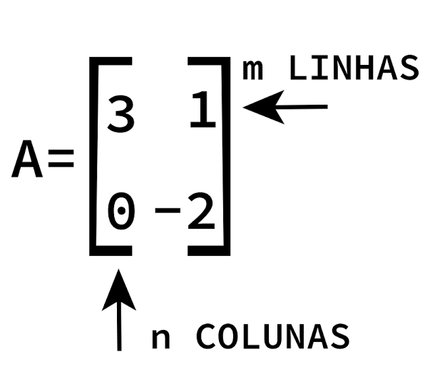
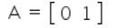
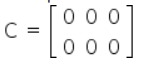

Matriz
Matriz é uma tabela organizada em linhas e colunas no formato m x n, onde m representa o número de linhas (horizontal) e n o número de colunas (vertical).
A função das matrizes é relacionar dados numéricos. Por isso, o conceito de matriz não é só importante na Matemática, mas também em outras áreas já que as matrizes têm diversas aplicações.

Onde:
- A: Nome da Matriz
- "m" ou "i": Linhas
- "n" ou "j": Colunas
Exemplo de Matriz
Matriz linha
Matriz de uma linha.
Exemplo: Matriz linha 1 x 2

Matriz coluna
Matriz de uma coluna.
Exemplo: Matriz coluna 2 x 1
Matriz nula
Matriz de elementos iguais a zero.
Exemplo: Matriz nula 2 x 3

Matriz quadrada
Matriz com igual número de linhas e colunas.
Exemplo: Matriz quadrada 2 x 2
Matriz identidade
Os elementos da diagonal principal são iguais a 1 e os demais elementos são iguais a zero.
Matriz inversa
Uma matriz quadrada B é inversa da matriz quadrada A quando a multiplicação das duas matrizes resulta em uma matriz identidade In, ou seja, texto A . B = B . A = In
A multiplicação das duas matrizes resulta em uma matriz identidade, In.
- Se a > 0, a parábola fica voltada para cima.
- Se a < 0, a parábola fica voltada para baixo.
Quanto maior o valor absoluto de "a", mais fechada será a parábola.
Matriz transposta
É obtida com a troca ordenada das linhas e colunas de uma matriz conhecida.
- Parábola para cima → vértice é o ponto mínimo.
- Parábola para baixo → vértice é o ponto máximo.
Matriz oposta
É obtida com a troca de sinal dos elementos de uma matriz conhecida.
A soma de uma matriz com a sua matriz oposta resulta em uma matriz nula.
Igualdade de matrizes
Matrizes que são do mesmo tipo e possuem elementos iguais.
Exemplo: Se a matriz A é igual a matriz B, então o elemento d corresponde ao elemento 4.
Operações entre Matrizes
Adição de matrizes
Uma matriz é obtida pela soma dos elementos de matrizes do mesmo tipo.
Propriedades:
- Comutativa: A + B = B + A
- Associativa: (A + B) + C = a + (B + C)
- Elemento oposto: A + (-A) = (-A) + A = 0
- Elemento neutro: A + 0 = 0 + A = A = 0 se 0 for uma matriz nula de mesma ordem que A.
Subtração de matrizes
Uma matriz é obtida pela subtração dos elementos de matrizes de mesmo tipo.
Exemplo: A subtração entre elementos da matriz A e B produz uma matriz C.
Neste caso, realizamos a soma da matriz A com a matriz oposta de B, pois A - B = A + (-B).
Multiplicação de matrizes
A multiplicação de duas matrizes, A e B, só é possível se o número de colunas de A for igual ao número de linhas de B, ou seja, A m x p . B p x n = C m x n.
Propriedades:
- Associativa: A.(B.C) = (A.B).C
- Distributiva à direita: A.(B + C) . A = B.A + C.A
- Distributiva á esquerda: (B + C) . A = B.A + C.A
- Elemento neutro: A.In = In . A = A, onde In é a matriz identidade
Multiplicação de matriz por um número real
Obtém-se uma matriz onde cada elemento da matriz conhecida foi multiplicado pelo número real.
Propriedades:
Utilizando números reais, m e n, para multiplicar matrizes do mesmo tipo, A e B, temos as seguintes propriedades:
- m . (n.A) = (m.n) . A
- m . (A+B) = m . A + m . B
- (m + n) . A = m . A + n . A
- 1 . A = A
Matrizes e determinantes
Um número real recebe o nome de determinante quando está associado a uma matriz quadrada. Uma matriz quadrada pode ser representada por Am x n, onde m = n.